Crie um programa que exiba: Olá, Mundo! Bem-vindo à programação em C.
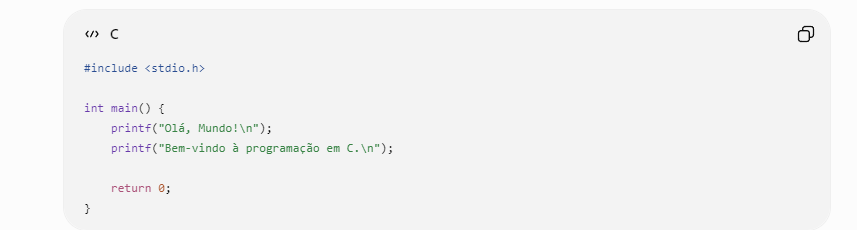
Explicação:
#include
Solicite o nome e a idade do usuário e exiba uma mensagem de apresentação.
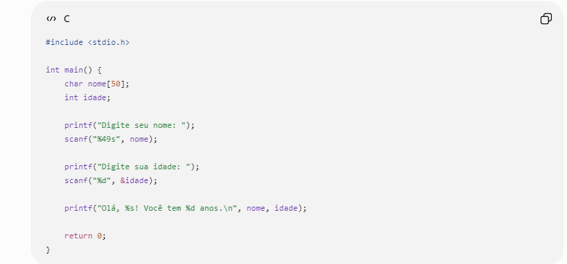
Explicação: char nome[50] cria uma variável chamada nome para armazenar texto. O número 50 determina o espaço reservado para o nome. int idade cria uma variável chamada idade para armazenar um número inteiro. O primeiro printf pergunta o nome do usuário. O scanf recebe o nome digitado e coloca essa informação dentro da variável nome. %s indica que estamos trabalhando com texto. Depois, outro printf pergunta a idade. O segundo scanf recebe a idade. %d indica que o valor recebido é um número inteiro. O &idade indica o endereço da variável onde o número será armazenado. No último printf, %s é substituído pelo nome e %d é substituído pela idade. Por exemplo, se o usuário colocar Felipe e 16, o programa mostrará uma apresentação utilizando essas informações.
Leia dois números inteiros e exiba a soma.
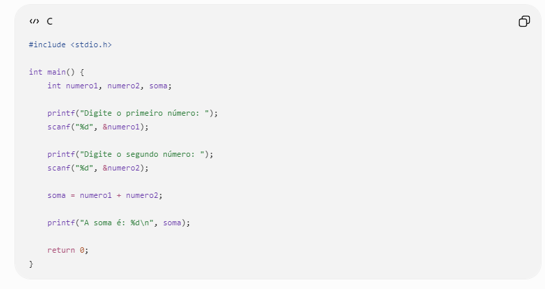
Explicação: int numero1, numero2, soma cria três variáveis inteiras. numero1 guarda o primeiro número. numero2 guarda o segundo número. soma guarda o resultado. Os dois printf fazem as perguntas para o usuário. Os dois scanf recebem os números digitados. Depois acontece o cálculo da soma. O programa pega o valor de numero1, pega o valor de numero2 e adiciona os dois. O resultado é colocado dentro da variável soma. Por último, o printf mostra o resultado. Exemplo: se os números forem 10 e 5, a soma será 15.
Leia dois números e mostre soma, subtração, multiplicação e divisão inteira.
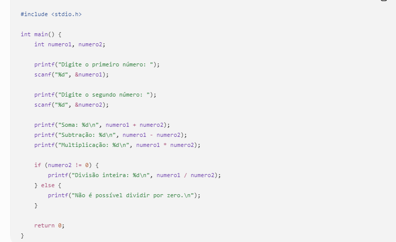
Explicação: O programa começa incluindo a biblioteca stdio.h, que permite utilizar funções como printf e scanf. Depois, a função main indica o início da execução do programa. São criadas duas variáveis inteiras para armazenar os números digitados pelo usuário. O programa solicita os dois números e utiliza o scanf para armazená-los. Em seguida, realiza as operações de soma, subtração e multiplicação utilizando os operadores matemáticos correspondentes. Para realizar a divisão, o programa utiliza uma condição if para verificar se o segundo número é diferente de zero, evitando uma divisão inválida. Como as variáveis são do tipo inteiro, a divisão também é inteira, portanto a parte decimal é descartada. Caso o segundo número seja zero, o programa informa que não é possível realizar a divisão. No final, o return 0 indica que o programa foi encerrado corretamente.
Leia um número inteiro e mostre seu antecessor e sucessor.
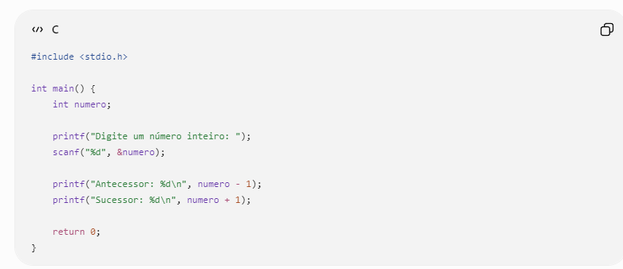
Leia duas notas (float) e calcule a média.
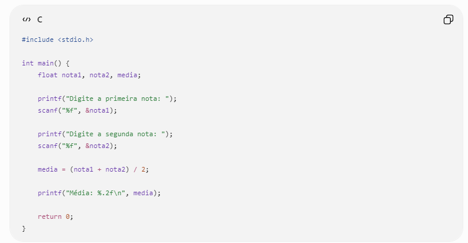
Leia uma temperatura em Celsius e converta usando F=(C*9/5)+32.
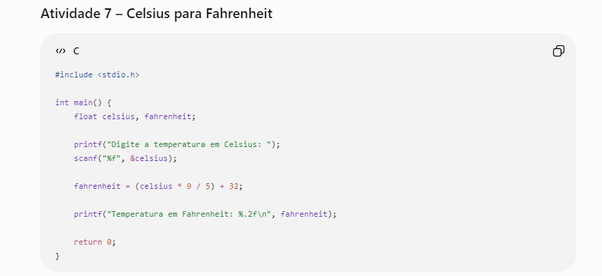
Leia base e altura e calcule a área.
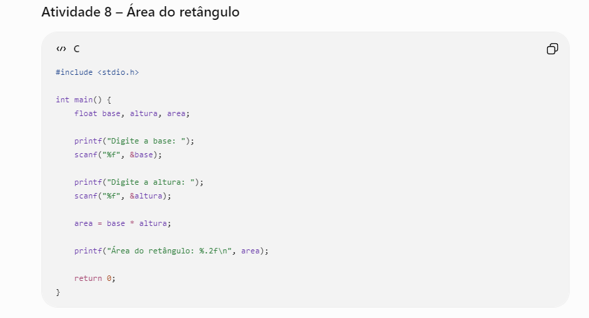
Leia valor da hora e quantidade de horas trabalhadas. Calcule o salário.
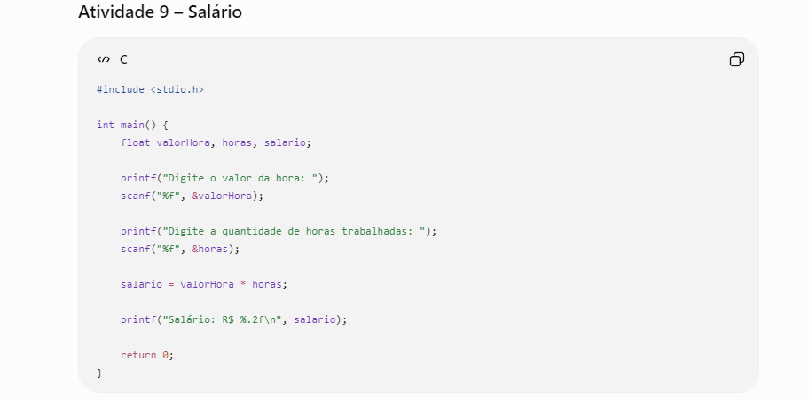
Leia dois números e mostre soma, subtração, multiplicação, divisão e resto da divisão.
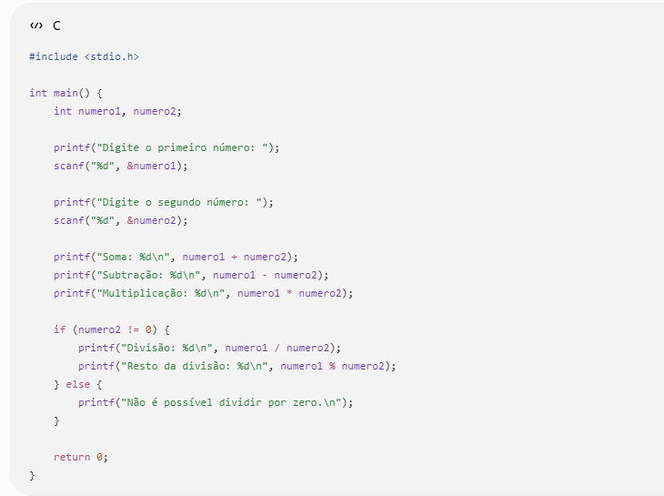
Solicite nome, idade, nota 1 e nota 2. Exiba uma ficha do aluno contendo os dados e a média final.,
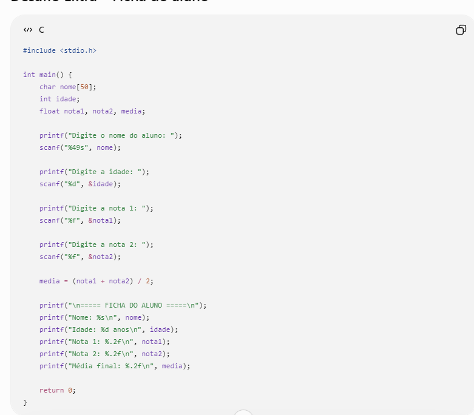